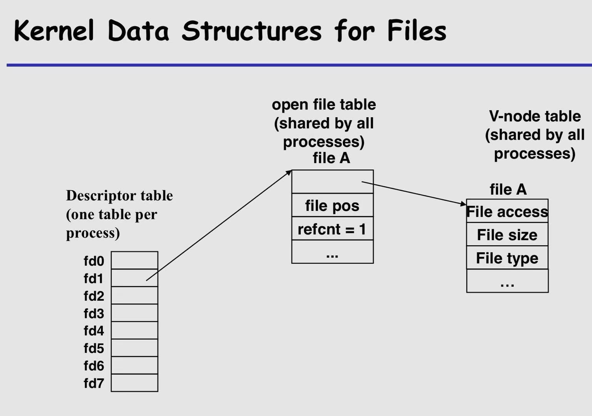
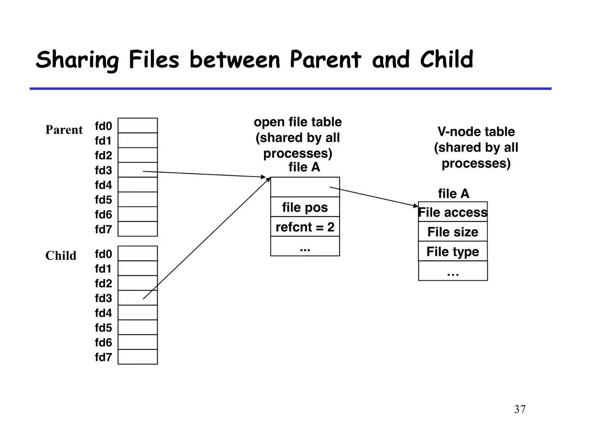
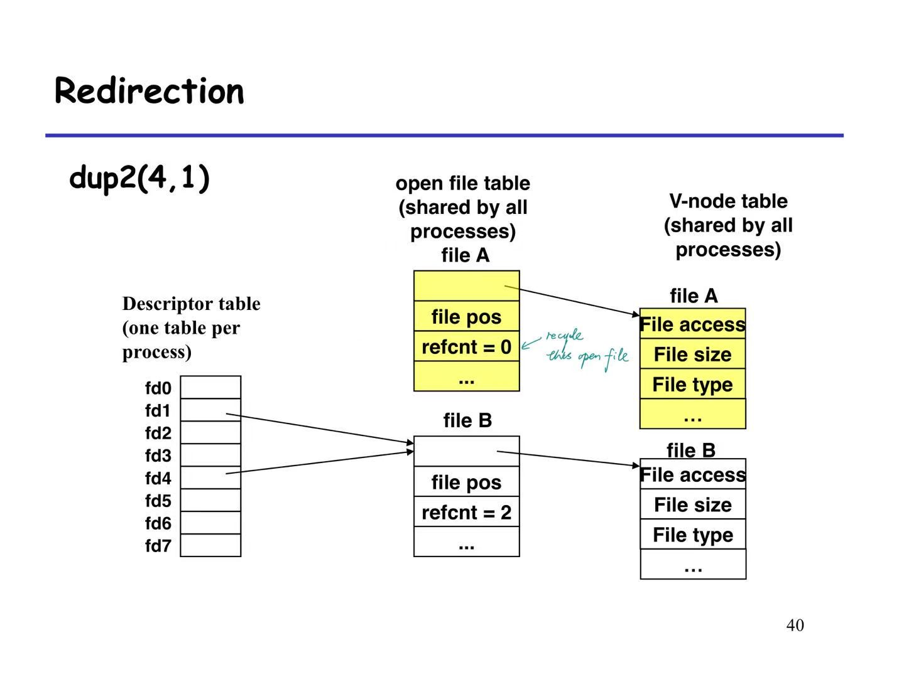
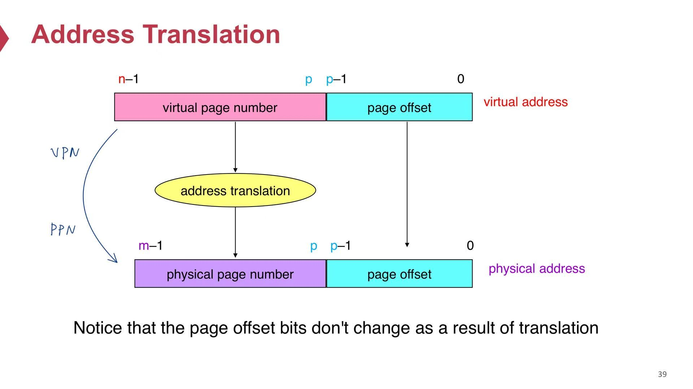
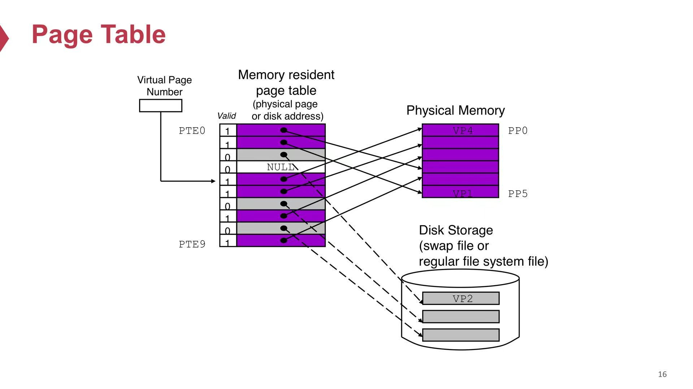
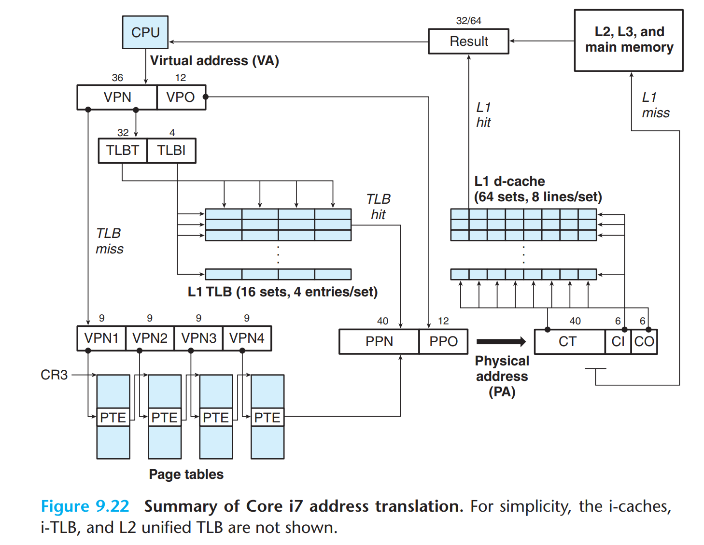
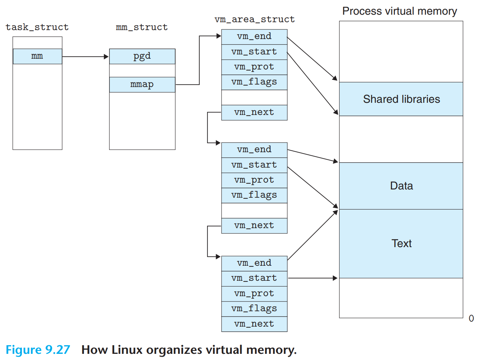
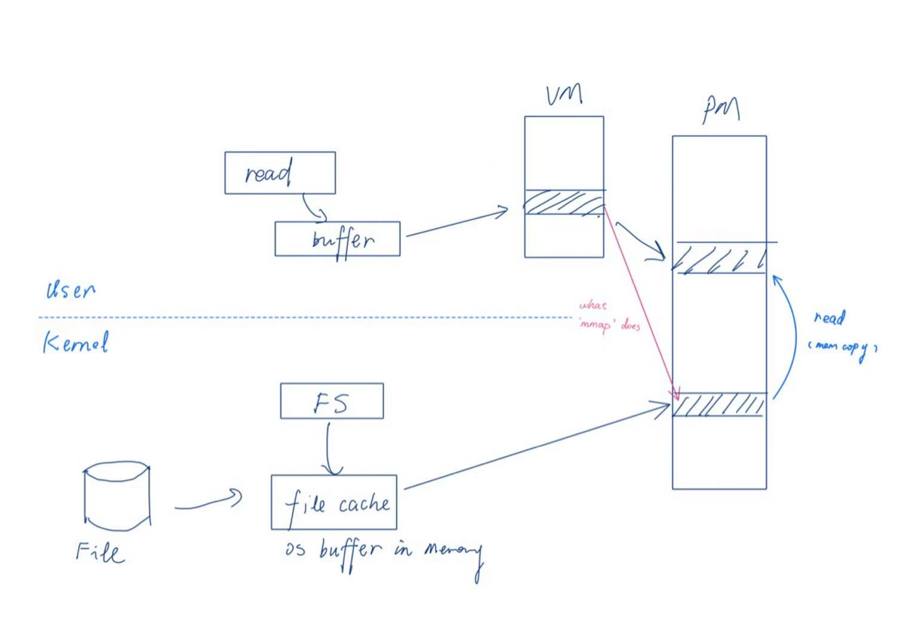

ICS2-note
ICS-note
ICS2 note, organized based on slides and textbook
因为最近太忙了，其实草稿箱里有好几篇blog都没空动笔，
先拿这篇 ics 的复习笔记水一水，后面应该会增加更多思路性的东西，能把整篇穿起来
Menu
To be archived
errno: simplest way is to give it to a global variable
Process Scheduling:
-
FIFO
-
SJF
-
STCF
Memory Hierachy
Storage
- Disk, rotate
- SSD
- SRAM
- DRAM
RAM
Locality
temporal locality: recent visited data will be visited again
spatial locality: data nearby will have more chance of being visited
Mem Hierachy
Cache
higer level, less space
Cache miss: fetch from a higher level, then overwriting an existing block if full (evicting)
Placement policy: restrict to a smmal subset of lower level cache
Miss types:
- cold miss: warm up the cache
- conflict miss: unhealthy miss, 'cause the cache is not full, map policy doesn’t behave well
- capacity Miss: this a healthy miss
Cache Memory
General organization of cache

Direct mapping cache
exactly one line ( E=1 )
Writing Cache
write through: immediately write back to memory
write back:
-
write back only when the data shall be evicted
-
need a dirty bit
when it comes to write miss, there are 2 strategies correspondlingly:
- write-allocate for write back: exchange level by level
- no-write-allocate for write through: write directyly to low level
Memory Mountain
Exceptional Control Flow
Process Control (Exception)
reaping
Pay attention to these concepts:
- zombie, child process terminated but not recycled
- orphane, child process who is still running when parent exit
parent reaps the terminated child (zombie)
init process:
- when a parent terminates, kernel arrange for init process to be the adopted parent of orpahaned children
- created during sys setup
- never terminate
- is the ancestor of every process
waitpid function:
pid_t waitpid(pid_t pid, int* statusp, int options);
Returns: PID of child is OK, 0(if WHOHANG), or -1 if error
TODO: 3 types of options
sleep
execve
load and run the object, by passing a argument list and a environment variable list
1 |
|
Signals
higher level of exceptional control flow
Difference between signal and exception
| sender | receiver | character | ||
|---|---|---|---|---|
| signal | cpu (user or kernel mode) | kernel | ||
| exception | kernel mode | user mode |
Sending Signal
Process Groups
kill function
send signal to a particular process / process group
alarm function
return remaining sec of previous alarm
Receiving Signal
Pending Signal Set
sighandler
Blocking N Unblocking
- Implicit: kernel
- Explicit
Sighandler Design
- G0
- G1
Design should be aware that pending signals are not queued
eg. catch SIGCHLD to reap children
Avoid Nasty Concurrency Bugs
key: signals are async,
eg. If a parents calls fork() and create a record of the child, and registers a sighandler to delete the record after SIGCHLD, it may face bugs
this is called a race
Explictly waiting 4 signals
use a pausefuntion, and a while loop; however the signal may race with pause which could cause the program from never ending
A popular solution is sigsuspend, which is a atomic combination of sigprocmask-pause-sigprocmask
Nonlocal Jumps
setjmp (jmp_buf env)
longjmp (jmp_buf env, int retval)restores the program from the very point of setjmp return
setjmp can be called for several times:
- at first time, save the env, returns 0
- then each corresponding longjmp call, returns retval
while longjmp may be called several times, but never returns
It may bring bugs like memory leak
Application:
- Permit immediate return from a deeply nested function call
- Branch out of a signal handler to a specific code location, rather than to the instr that was interrupted by the signal
Sys-level I/O
Unix IO
modeled as files
records file offset k
Opening and Closing Files
open converts a filename into a file descriptor and returns fd num

Sharing Files
if a child is fork() from its parent, then the two processes have different fd table, but will point to one open file, whose refcnt++

IO Redirection
dup(oldfd)creates a copy using currently avaliable smallest num
dup2(oldfd, newfd)overwrites the entry in fd table

RIO
no-buffer version
1 | ssize_t rio_readn() |
with buffer:
in this version, the high level functions are based on internel functionrio_read()
First define a struct
1 | typedef struct { |
1 | void rio_readinitb() |
Standard I/O
open files as streams
similar to rio with buffer,but it is generally designed to operate in one state at a time
Virtual Memory
Physical and Virtual Memory
VM as a tool for caching
See VM as a tool for caching data from disk, it can maximize the use of memory
However, the cached data are always organized in Physical address, see it in later section where reverse mapping takes the responsibility
Page Table and Address Translation
Because of large miss penalty and large expense of accessing the first byte, VM system paritions VM into pages of size 4k blocks, naming Vitual Page
Similarly PM is also partitioned into Phsical Page
Thus Page Table plays the role of mapping virtual address to physical address, playing an important role in address translation
Here’s the component of Virtual Address and Physical Address:
- the front part is marked as page number
- the latter part is marked as page offset

Page table: index is VPN while its entry consists PPN

page fault
If a DRAM miss happens, or say there’s no valid item in corresponding PTE, this is a Page fault.
Handler will try to update the PT; if the PM is already full, then chose a victim to swap out.
Functionalities of PT
Thus PT serves as a tool for:
- Memory management
- Memory protection: Extend PTE with permission bits
- Memory recorder: Extend PTE with a Reference bit and a dirty bit
TLB
PT is a powerful tool, but it faces a problem. Dig into its procedure:
- get VA and the base address of PT, calulate the PTEA(a PA)
- fetch PTE from memory, using PTEA
- translate into PA, fetch memory
This procedure contains 2 times of visiting memory, how to reduce the overhead?
By Applying the method of cache to PT, a TLB(Translation Lookaside Buffer) is created. It is a SRAM that can be visited faster, which caches the recent translated address
Multi-level Page Table
Uses a multi-level PT: if we use a single level PT, then it is gonna to hold 2^(n-12) lines of entries. By spliting it into more levels, it is broken down into sections, which can save considerable space.
The base address of first-level PT is store in a register named CR3 (Thus this table cannot be swapped out, which may be discussed later)

VMA
Virtual Memory Area, can be displayed in data structure below

- vm_prot: premision
- vn_flags: share / private
Memory Mapping
A VM area can get its intial values from the object, it can be backed by
- regular file on disk
- anonymous file (nothing)
fork() revisit
Make copies of old process’s mm_struct, vm_area_struct, PT
The PM will be separated using “Copy On Write” strategy (a lazy strategy).
User-level
call mmap to allow tansfer without copying into user space

Page Swapping and Replacement Policy
happen time: maintain a high/low water mark
There are a few replace policies:
- OPT: optimal strategy
- FIFO: first in first out